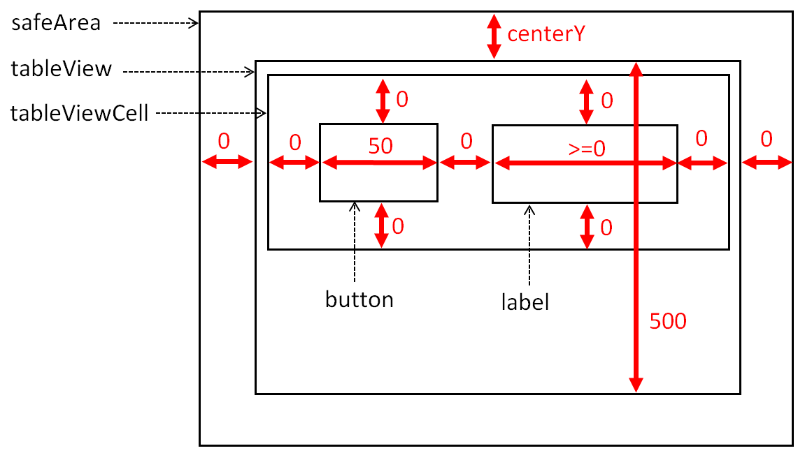
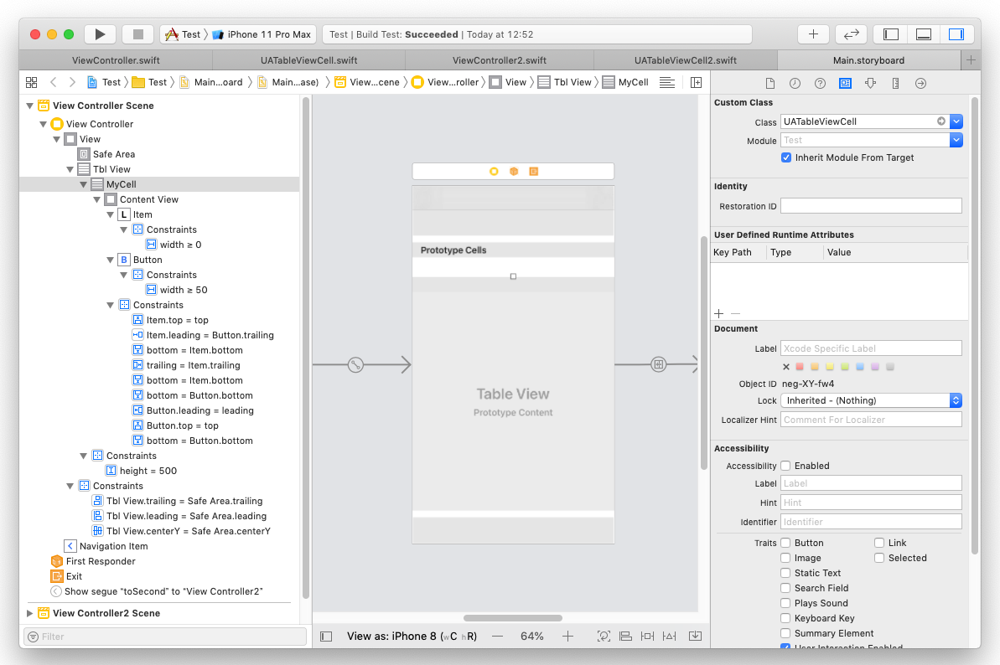

テーブルビューの作成
macOS 10.14.6 / Xcode 11.3.1 / Swift 5
テーブルビューを InterfaceBuilder を使用する方法と、ソースコードにより生成する方法の2パターンで作成してみた。両者は行の高さが異なる以外は全く同じ仕様である。
レイアウト
レイアウトは、行の高さ以外は全て AutoLayout により定義する。
詳細は下図を参照のこと。数字は制約の固定値（ピクセル単位）を示す。ゼロはビューの端同士が重なることを意味する。
なお、行（テーブルビューセル）の高さは、ソースコードの UITableViewDelegateメソッドにより設定する。テーブルビューに表示される行数は、行の高さ/500 となる。

処理
ラベルにデータソースのデータを表示する。ボタンのタップしたときラベルの色を変え、離したときに色を戻す。
実装方法
(1) Intefaca Builderを使用した方法
テーブルビューを追加し制約の設定する。Prototype Cellを使用してテーブルビューセルを追加する。セルの中にボタンとラベルを追加し、制約を設定する。テーブルビューセルのクラスにカスタムクラス（UATableViewCell）を指定し、identifireに任意の値（MyCell）を設定する。カスタムクラスのプロパティからボタンとラベルにOutlet接続する。

ビューコントローラ
テーブルビューセルのカスタムクラス
(2) ソースコードにより生成する方法
ビューコントローラ
テーブルビューセルのカスタムクラス
テーブルビューセルの操作方法
tableViewDataSourceメソッドの中で、テーブルビューセルのカスタムクラスの idetifireを指定して dequeueReusableCellメソッドを呼び、テーブルビューセルを取得する。再利用可能なオブジェクトがあればそれが使われる。取得したセルに対してプロパティ設定等の操作を行い戻り値として返す。
ソースコードによりテーブルビューを生成している場合、セルのカスタムクラスの idetifire は、以下のコードによりテーブルビューに登録する。
（全体的に妙な仕組みのような気もするが）